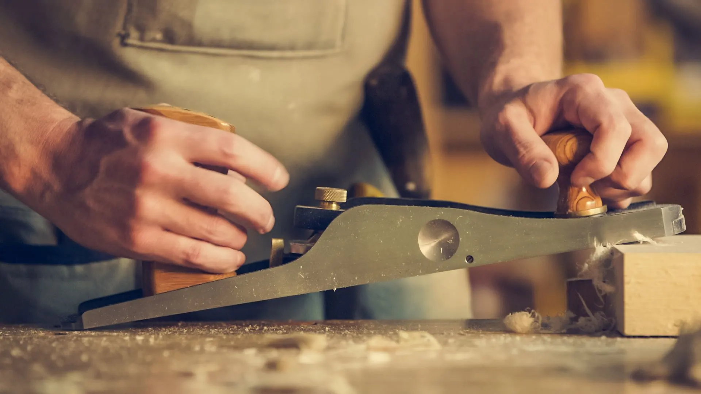
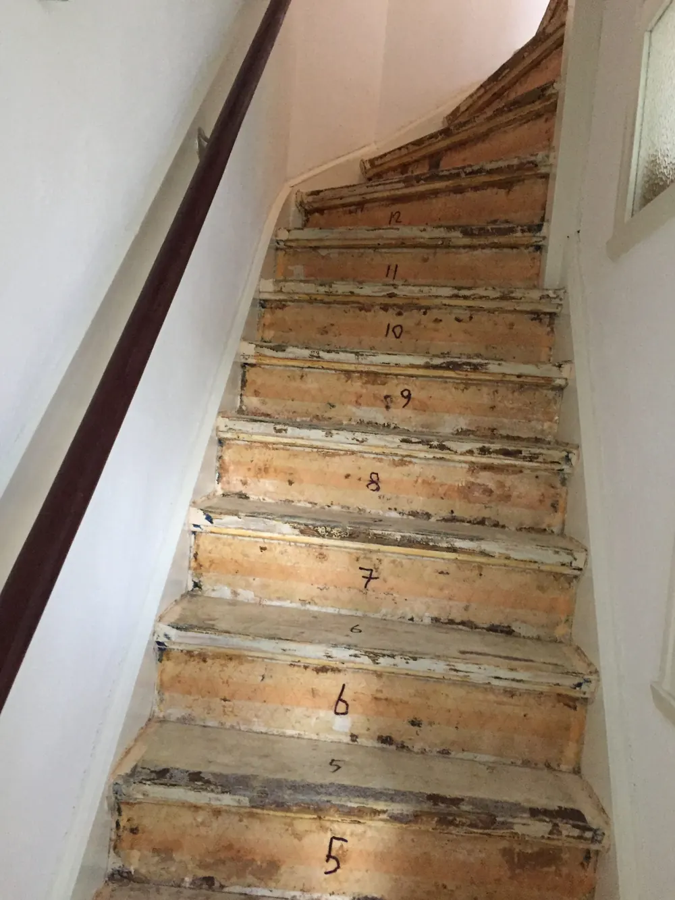
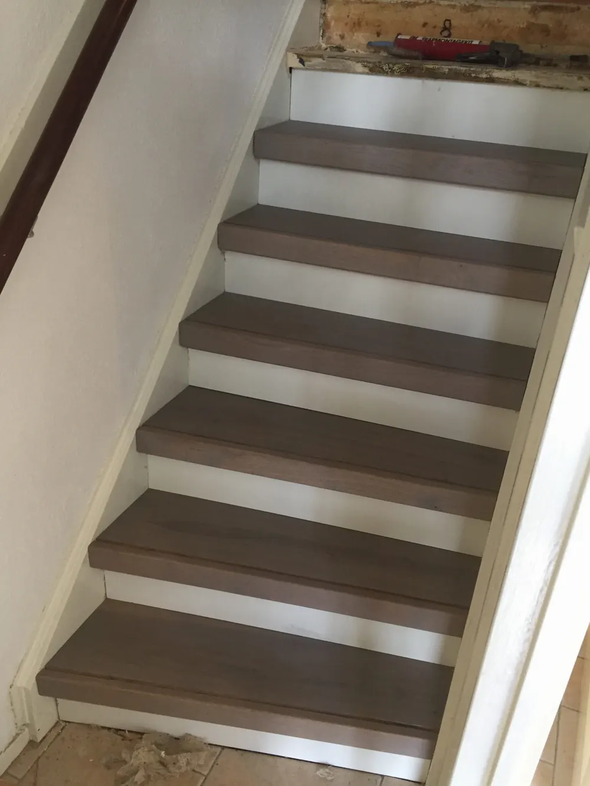
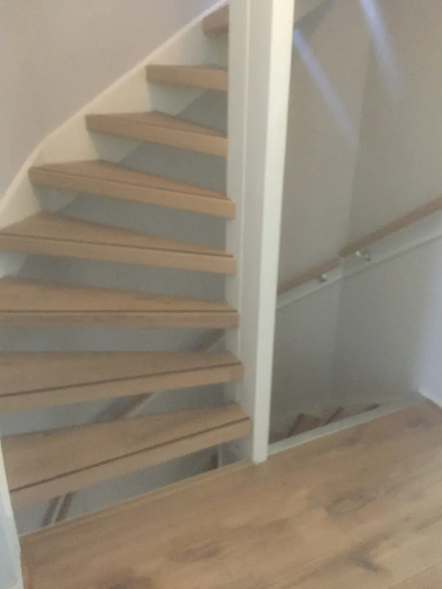

Voor
Voor
 Na
Na
Foto: Pexels
Renovatie- en timmerbedrijf, Rozenburg
Renovatie, verbouwing en timmerwerk voor uw woning: complete renovaties, badkamers, trappen en maatwerk. Marcus van der Stel is bij elk project zelf betrokken.
Zo werkt MSBouw
Marcus van der StelEigenaar van MSBouw
Lees meer over MarcusDiensten
Van een complete woningrenovatie tot één maatwerkkast. Alles wat met bouwen, renoveren en afwerken te maken heeft, onder één aanspreekpunt.
Voor en na
Voor
Na
Voor
Na Voor
Voor
 Na
NaGerealiseerd werk
Foto's uit eigen projecten: badkamers, trappen en buitentimmerwerk.




Werkwijze
Vijf stappen, één aanspreekpunt. U weet steeds waar u aan toe bent.
We bespreken uw plannen, wensen en de mogelijkheden.
Samen kiezen we materialen en oplossingen. Een offerte is vrijblijvend.
Planning en afspraken liggen vast voordat er gesloopt wordt.
Sloop, timmerwerk, stucwerk, sanitair en afwerking, met Marcus zelf erbij.
Een verzorgd eindresultaat, opgeleverd zoals afgesproken.
Recensies
In september 2019 onze badkamer en toilet laten renoveren. Wij zijn erg tevreden over zijn werk. Denkt goed mee over wat er mogelijk is en komt zijn afspraken na.
Hij is zeer goed en professioneel te werk geweest. We zijn erg blij met ons nieuwe dakraam.
Onze badkamer is zeer vakkundig gerenoveerd. Zeer goede service!
Goed werk mooie badkamer gemaakt genieten elke dag er van!
Heel goed mooi vakwerk
Vijf reacties van klanten, overgenomen van de vorige website van MSBouw. Er is geen gemiddelde score berekend.